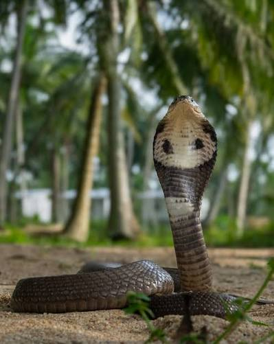

.jpg)
.jpg)
.jpg)
งูเห่าไทย/งูเห่าหม้อ/งูเห่าดอกจัน (Monocled Cobra)
ชื่อวิทยาศาสตร์: Naja Kaouthia
ลักษณะทั่วไป
เป็นงูพิษขนาดกลางถึงใหญ่ที่มีความงดงามและโดดเด่นทางกายวิภาค ลำตัวยาว เรียว ทรงกระบอก แม้โครงสร้างจะดูเพรียวลมแต่กลับมีความบึกบึน แข็งแรง และยืดหยุ่นสูง ซึ่งถูกออกแบบมาเพื่อการเคลื่อนไหวที่รวดเร็วและการจับเหยื่อที่ทรงพลัง เมื่อโตเต็มวัยทั่วไปจะมีความยาวอยู่ที่ 100 ถึง 150 เซนติเมตร (1 – 1.5 เมตร) อย่างไรก็ตาม ในตัวอย่างที่สมบูรณ์เต็มที่และได้สารอาหารสมบูรณ์ อาจพบความยาวได้ถึง 180 ถึง 200 เซนติเมตร น้ำหนักตัวเฉลี่ยของงูโตเต็มวัยจะอยู่ที่ประมาณ 1 ถึง 2.5 กิโลกรัม ขึ้นอยู่กับความยาวและช่วงเวลาหลังจากกินอาหาร ในยามปกติที่ไม่ได้ถูกคุกคาม หัวของงูเห่าดอกจะมีลักษณะเรียว มน แบนเล็กน้อย และเชื่อมต่อเข้ากับลำตัวโดยไม่มีคอที่คอดกิ่วชัดเจนเหมือนงูในวงศ์งูเขียวหางไหม้ ทำให้ดูกลมกลืนไปกับลำตัว มีดวงตากลมโตปานกลาง รูเลนส์ตา (Pupil) กลมสนิท ม่านตามักมีสีน้ำตาลเข้มหรือสีน้ำตาลอมทอง ช่วยให้สายตาจับจ้องการเคลื่อนไหวได้อย่างดีเยี่ยมทั้งในเวลากลางวันและกลางคืน ส่วนปลายปากมน เกล็ดบริเวณริมฝีปากเรียบเนียน ด้านในมีเขี้ยวพิษ (Proteroglyphous) อยู่ด้านหน้าของฟันบน เขี้ยวมีลักษณะเป็นโพรงคล้ายเข็มฉีดยา สามารถปล่อยพิษได้อย่างรวดเร็วเมื่อทำการฉกกัด ส่วนคอมีความสามารถพิเศษในการขยายออกทางด้านข้างอย่างมาก โครงสร้างนี้เกิดจากกระดูกซี่โครงส่วนคอ (Cervical ribs) ที่สามารถกางออกได้เมื่อกล้ามเนื้อบริเวณคอหดตัว แผ่นแม่เบี้ยของงูเห่าดอกจันมีความกว้าง โค้งมน และเมื่อแผ่ออกเต็มที่จะเห็นเป็นแผ่นกว้างเรียบอย่างชัดเจน จุดเด่นที่สุดที่ใช้แยกชนิดงูเห่าดอกจันออกจากงูเห่าชนิดอื่น คือลวดลายปรากฏอยู่บริเวณด้านหลังของแผ่นแม่เบี้ย (Dorsal hood mark) ลวดลายนี้มีลักษณะเป็นวงแหวนเดี่ยวคล้ายรูปตัว O (Monocle) (รูปที่ 2) วงกลมนี้มักมีขอบสีขาวหรือสีครีมสว่าง ล้อมรอบพื้นที่สีเข้มด้านใน และตรงกลางมักมีจุดสีดำหรือสีน้ำตาลเข้ม ความเข้มและความชัดเจนของลวดลายนี้อาจแตกต่างกันไปในงูแต่ละตัว บางตัวก็เป็นรูปอื่นเลย เช่น รูปอานม้า (รูปที่ 3) งูเห่าไทยมีความหลากหลายทางสีสันสูงมาก (Variability) ตั้งแต่สีน้ำตาลอ่อน สีครีมอมเหลือง สีน้ำตาลเข้ม ช็อกโกแลต น้ำตาลกาแฟ เกล็ดรูปใบมะขามเรียบมัน (Smooth scales) จัดเรียงเป็นแถวเฉียงอย่างเป็นระเบียบ ทำให้ลำตัวมีความเงางามเมื่อสะท้อนแสง ลำตัวส่วนใหญ่มักเป็นสีเดียวกลมกลืนกันทั้งตัว แต่ในงูบางตัวอาจพบแถบขวางจางๆ สีอ่อนกว่าหรือเข้มกว่า ลาดผ่านตามความยาวของลำตัว ใต้ท้องมีสีขาว สีครีม หรือสีเหลืองอ่อน เกล็ดท้องมีขนาดใหญ่ เรียบกว้าง ช่วยในการยึดเกาะพื้นผิวเวลาเลื้อย ใต้คอมีแถบสีเข้มขวางอยู่ 1-2 แถบอย่างชัดเจนใต้แผ่นแม่เบี้ย ซึ่งจะมองเห็นได้อย่างชัดเจนเมื่องูชูคอขึ้นขู่ หางของงูเห่าดอกจันมีลักษณะค่อยๆ เรียวลีบลงไปจนถึงปลายสุด ปลายหางเรียมแหลม ไม่มีเกล็ดแข็งหรืออวัยวะพิเศษที่ปลายหาง ความยาวของหางคิดเป็นประมาณ 15–20% ของความยาวลำตัวทั้งหมด ช่วยในการทรงตัวขณะเลื้อยหรือยกตัวขึ้นขู่ เคลื่อนที่บนพื้นดินได้อย่างรวดเร็วและว่องไว ว่ายน้ำเก่งมาก สามารถข้ามลำคลองหรือพบนอนแช่น้ำคลายร้อนได้บ่อยครั้ง สามารถปีนต้นไม้ต่ำๆ กองไม้ หรือรั้วบ้านได้ดี แม้จะไม่ใช่งูสายพันธุ์ที่อาศัยบนต้นไม้เป็นหลักก็ตาม งูเห่าดอกจันเป็นนักล่าระดับบนในระบบนิเวศที่มีความคล่องแคล่ว ปรับตัวเก่ง และมีสัญชาตญาณการล่ากับการระแวดระวังภัยที่เฉียบแหลม งูเห่าดอกจันเป็นสัตว์กินเนื้อ (Carnivore) ที่กินอาหารได้หลากหลายประเภท ไม่เลือกกินมากนัก ทำให้สามารถเอาชีวิตรอดในสภาพแวดล้อมที่หลากหลายได้ดี อาหารของมันได้แก่ สัตว์สะเทินน้ำสะเทินบกอย่างกบ เขียด อึ่งอ่าง และคางคก (เป็นอาหารหลัก โดยเฉพาะงูขนาดเล็กถึงปานกลาง) หรือสัตว์ฟันแทะอย่างหนูนา หนูพุก หนูบ้าน และกระรอก (ช่วยควบคุมประชากรหนูในพื้นที่การเกษตรได้ดี) สัตว์เลื้อยคลาน เช่น จิ้งจก ตุ๊กแก กิ้งก่า รวมถึง งูชนิดอื่นที่มีขนาดเล็กกว่า สัตว์น้ำอย่างปลาประเภทต่างๆ (หากอาศัยอยู่ใกล้แหล่งน้ำ) นกขนาดเล็กและไข่นก (ในบางโอกาส) ออกหากินได้ทั้งกลางวันและกลางคืน แต่จะพบ มากที่สุดในช่วงพลบค่ำ หัวค่ำ และหลังฝนตก ซึ่งเป็นช่วงที่เหยื่ออย่างหนู กบ หรืออึ่งอ่างออกหากิน งูเห่าดอกจันจะไม่กัดใครโดยไม่มีเหตุผล มักอาศัยอยู่ตัวเดียวตามลำพัง (ยกเว้นช่วงฤดูผสมพันธุ์) โดยธรรมชาติหากพบมนุษย์หรือสัตว์ขนาดใหญ่กว่า สัญชาตญาณแรกของมันคือ การเลื้อยหนีไปหรือหลบซ่อนตัว แต่เมื่อหวาดกลัวสุดขีด ถููกข่มขู่ หรือต้อนจนมุม ไม่สามารถเลื้อยหนีได้ งูเห่าดอกจันจะเข้าสู่โหมดป้องกันตัวทันที โดยจะชูลำตัวส่วนหน้าขึ้นสูงประมาณ 1 ใน 3 ของความยาวลำตัว พร้อมกับแผ่แผ่นแม่เบี้ยออกกว้างเพื่อทำให้ตัวเองดูตัวใหญ่ขึ้น พ่นลมอย่างแรงจนเกิดเสียง "ซู่..." หรือ "ฟ่อ..." ดังชัดเจน เพื่อเตือนไม่ให้ศัตรูเข้าใกล้ หากศัตรูยังเข้าใกล้ในระยะฉก (เทียบเท่าความสูงที่ยกตัวขึ้น) มันจะพุ่งฉกทันที บางครั้งอาจเป็นการ "ฉกเตือน" โดยไม่ปล่อยพิษ หรือฉกแบบไม่เปิดปาก เพื่อไล่ให้ศัตรูถอยไป แต่หากอีกฝายยังดื้อ ไม่ยอมถอม ก็จะฉกกัดพร้อมปล่อยพิษแบบเต็มพิกัด
ถิ่นอาศัย พิษ และความอันตราย
- ถิ่นอาศัย: งูเห่าดอกจันเป็นงูพิษสายพันธุ์ที่มีการกระจายตัวทางภูมิศาสตร์กว้างขวางมากในภูมิภาคเอเชียใต้และเอเชียตะวันออกเฉียงใต้ เป็นงูที่ปรับตัวเข้ากับสภาพแวดล้อมได้หลากหลายประเภท ตั้งแต่ป่าธรรมชาติไปจนถึงพื้นที่เมือง พบได้แพร่หลายในหลายประเทศในเอเชียใต้และเอเชียตะวันออกเฉียงใต้ ได้แก่ อินเดีย (โดยเฉพาะภาคตะวันออกและภาคตะวันออกเฉียงเหนือ), บังกลาเทศ, เนปาล, ภูฏาน, ไทย, เมียนมา, ลาว, กัมพูชา, เวียดนาม, ตอนเหนือของมาเลเซีย และมณฑลยูนนานของประเทศจีน สำหรับประเทศไทย งูเห่าดอกจันจัดเป็นงูเห่าชนิดที่พบได้บ่อยและแพร่หลายมากที่สุด พบกระจายอยู่หนาแน่นที่สุดใน ภาคกลาง ภาคตะวันออก ภาคตะวันตก ภาคใต้ และภาคตะวันออกเฉียงเหนือ และพบได้บ่อยมากในเขตพื้นที่ราบลุ่มแม่น้ำเจ้าพระยา รวมทั้งกรุงเทพมหานครและปริมณฑล เนื่องจากเป็นพื้นที่ชื้นและมีแหล่งอาหารอุดมสมบูรณ์ งูเห่าดอกจันชอบสภาพแวดล้อมที่มีความชื้นและใกล้แหล่งน้ำ สภาพแวดล้อมที่พบได้บ่อย ได้แก่ พื้นที่เกษตรกรรม เช่น ทุ่งนา สวนผลไม้ ไร่ปาล์ม และพื้นที่เพาะปลูก ซึ่งเป็นแหล่งที่มีหนูและสัตว์สะเทินน้ำสะเทินบกอยู่อาศัยเป็นจำนวนมาก หรือพื้นที่ชุ่มน้ำอย่างบริเวณใกล้หนอง บึง คลอง ริมแม่น้ำ ป่าป่าชายเลน และพุ่มไม้ชื้น หรือแม้แต่พื้นที่ใกล้ชุมชนมนุษย์ เช่น ใต้ฐานรากอาคาร บ้านเรือน กองไม้ กองวัสดุก่อสร้าง ซอกบ่อเกรอะ สวนสาธารณะ และท่อระบายน้ำในเมือง มักพบตามพื้นที่ราบลุ่มระดับต่ำ ไปจนถึงระดับความสูงปานกลาง (ส่วนใหญ่ไม่เกิน 900–1,000 เมตรจากระดับน้ำทะเล)
- พิษ: พิษออกฤทธิ์ทำลายระบบประสาทอย่างรุนแรง(Post-synaptic Neurotoxic) ออกฤทธิ์ยับยั้งการทำงานของสารสื่อประสาท (Acetylcholine) บริเวณตัวรับที่รอยต่อระหว่างประสาทและกล้ามเนื้อ (Neuromuscular junction) ส่งผลให้สัญญาณสั่งการจากสมองไม่สามารถส่งไปถึงกล้ามเนื้อได้ ทำให้กล้ามเนื้อลายทั่วร่างกายเกิดอาการอ่อนแรงและเป็นอัมพาต นอกจากนี้ยังออกฤทธิ์ทำลายเยื่อหุ้มเซลล์ในบริเวณที่ถูกฉกกัด (Cytotoxic) ทำให้เกิดการตายของเนื้อเยื่อ (Tissue necrosis) ปวด บวม และเกิดแผลเน่าพุพองอย่างรุนแรง เมื่อถูกกัดจะรู้สึกปวดแซ่บปวดร้อนทันที ระยะแรก (หลังถูกกัด 15 นาที) จะเริ่มมีอาการง่วงซึม หนังตาตก (Ptosis) มองเห็นภาพซ้อน ถือเป็นสัญญาณเตือนแรกสุดของพิษงูเห่า ผ่านไป 1-3 ชั่วโมงบริเวณบาดแผลจะเริ่มบวม แดง และตึง อาการบวมจะค่อยๆ ขยายกว้างขึ้นเรื่อยๆ ถึงช่วงนี้จะเริ่มมีอาการกล้ามเนื้อใบหน้าและช่องปากอ่อนแรง พูดไม่ชัด น้ำลายไหล ลืนลำบาก และอ้าปากได้ไม่กว้าง พิษเริ่มกระจายไปยังกล้ามเนื้อช่วยหายใจ (Diaphragm & Intercostal muscles) ทำให้แขนขาอ่อนแรง หายใจลำบาก หายใจขัด เกิดภาวะระบบหายใจล้มเหลว (Respiratory failure) และตายในที่สุด
- ระดับความอันตราย: โคตรอันตราย ☠☠☠☠☠(งูที่อันตรายที่สุดในประเทศไทย อันดับที่ 1 🥇): พิษอันตรายถึงชีวิต ลำดับค่าความเป็นพิษ (LD50) อยู่ที่ประมาณ 0.2 mg/kg ซึ่งรุนแรงมาก ปรับตัวเข้ากับสภาพแวดล้อมมนุษย์ได้ดีมาก พบได้ทั้งในทุ่งนา สวน ป่าชื้น รูหนู ใต้ฐานรากบ้านเรือน กองไม้ กองขยะ และรวมถึงท่อระบายน้ำในเขตเมืองใหญ่ ทำให้มนุษย์มีโอกาสเดินเผชิญหน้าโดยไม่ตั้งใจสูง นิสัยดุร้ายอย่างมาก พร้อมเข้าปะทะกับภัยคุกคามเมื่อจนมุม ครองอันดับ 1 งูที่ฆ่าคนตายมากที่สุดในประเทศไทยมาอย่างยาวนาน
Fun Fact
- ชนิดเดียวกัน แต่สีและลายต่างกันสุดขั้ว: งูเห่าไทยมีการแปรผันของสีและลายที่สูงและหลากหลายมาก ตั้งแต่สีน้ำตาลอ่อน สีเทา สีดำ ไปจนถึงสีเหลืองนวลหรือส้ม และเป็นหนึ่งในงูเห่าสายพันธุ์ที่พบภาวะเผือก (Albino) ได้บ่อยที่สุดในธรรมชาติ
- ลูกงูเกิดมาก็มีพิษพร้อมใช้ทันที: ลูกงูแรกเกิดยาวประมาณ 30 ซม. มีต่อมพิษและเขี้ยวพร้อมใช้งานเป็นไอเทมเริ่มต้นตั้งแต่ฟักออกจากไข่เลย ไม่ต้องรอโต เรียกได้ว่าแม่มันอันตรายแค่ไหน ตัวลูกก็อันตรายพอกัน
- จำเลยสังคม: งูเห่าไทยมักถูกพูดถึงในแง่ลบอยู่บ่อยๆ ด้วยนิสัยที่ดุร้าย คนจึงมักเปรียบเทียบคนที่ไม่รู้คุณคน เลี้ยงไม่เชื่อง คอยลอบกัดว่าเป็นงูเห่า